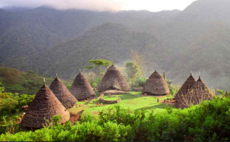

Selamat datang di situs pariwisata Indonesia!
Indonesia memang memiliki keindahan alam yang luar biasa, keanekaragaman budaya yang kaya, dan berbagai pilihan akomodasi yang mengagumkan. Berikut adalah beberapa hal menarik tentang Indonesia dalam konteks ini:
Keindahan Alam
Pulau-Pulau Indah: Dari Bali dengan pantainya yang eksotis, Lombok dengan Gunung Rinjani yang megah, hingga Pulau Komodo yang terkenal dengan biota lautnya yang kaya.
Taman Nasional: Seperti Taman Nasional Bromo-Tengger-Semeru di Jawa Timur dengan pemandangan gunung berapi yang spektakuler, atau Taman Nasional Gunung Leuser di Sumatera yang merupakan rumah bagi satwa langka seperti orangutan.
Kepulauan Raja Ampat: Terkenal dengan keindahan bawah lautnya yang memukau, merupakan surga bagi penyelam dan pecinta alam.
Keanekaragaman Budaya
Bali: Terkenal dengan kebudayaan Hindu-Balinya yang unik, tarian tradisional seperti Kecak dan Barong, serta upacara adatnya yang megah.
Yogyakarta: Pusat kebudayaan Jawa dengan istana kerajaan, kraton, dan kesenian tradisional seperti wayang kulit dan gamelan.
Toraja: Di Sulawesi, terkenal dengan budaya pemakaman uniknya yang melibatkan upacara adat dan ukiran-ukiran khas.
Akomodasi Terbaik
Resort dan Villa: Di Bali, banyak tersedia resort mewah dengan pemandangan pantai atau sawah yang menakjubkan.
Hotel Berbintang: Di kota-kota besar seperti Jakarta, Bandung, atau Surabaya, terdapat berbagai pilihan hotel berbintang dengan fasilitas lengkap.
Homestay: Di daerah wisata seperti Bromo atau Yogyakarta, ada juga pilihan homestay yang ramah dan terjangkau, memungkinkan wisatawan untuk merasakan kehidupan lokal.